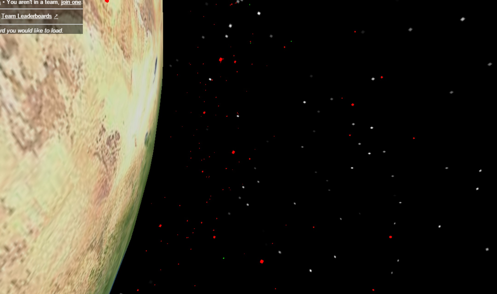

Terminal Velocity > Cosmic Junk Collector > Home
Cosmic Junk Collector
Cosmic Junk Collector is a web application, which uses open data from Orbital Objects to find the location of 'space junk'. The aim of the game is to move around space and destroy the junk to score points. Clean up space junk around the earth, with or against your friends. An immersive 3D experience entirely in-browser, no plugins required. We use a collection of space object positions to put active and inactive orbiting items in true places, allowing the player to see thousands of pieces of space junk at once. Built using Three.js, jQuery and Node, using Socket.io for fast, real-time communication between client and server.